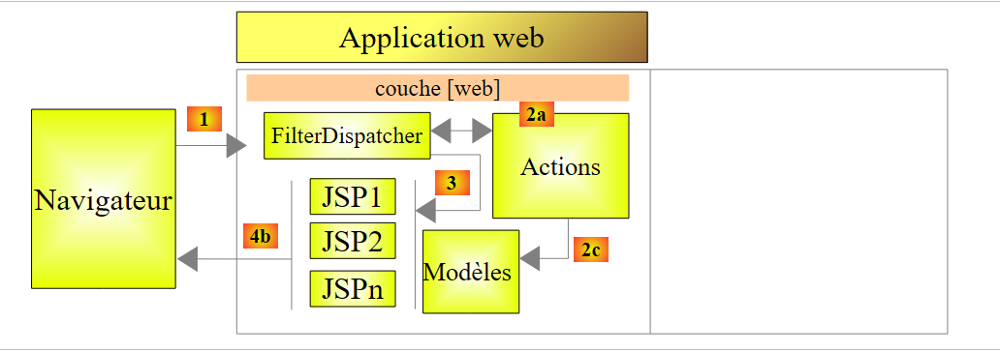
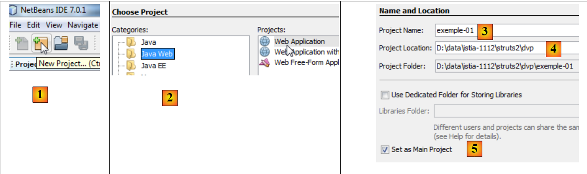
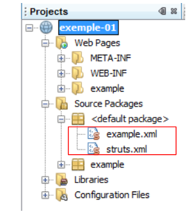
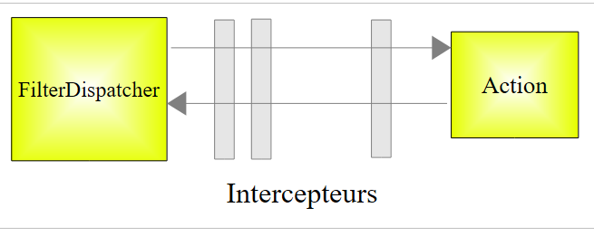
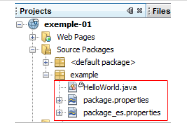
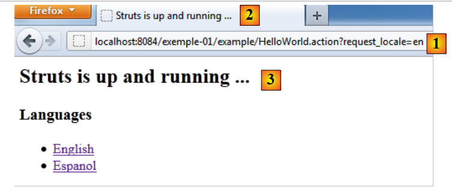

2. Ein erstes Beispiel
Die meisten unserer Beispiele beschränken sich auf die mit Struts 2 implementierte Webschicht:
 |
Sobald die Grundlagen behandelt sind, werden wir ein komplexeres Beispiel mit einer mehrschichtigen Architektur betrachten.
2.1. Erstellen des Beispiels
Wir erstellen unsere erste Anwendung.
 |
- In [1] erstellen wir ein neues Projekt
- Wählen Sie in [2] den Typ „Java Web / Webanwendung“ aus
- In [3] benennen wir das Projekt
- Geben Sie in [4] den Speicherort des Projekts an.
- In [5] legen wir das neue Projekt als Hauptprojekt fest.
 |
- Wählen Sie in [6] den Tomcat-Server aus. Bei der Installation von NetBeans 7.01 wurden zwei Server installiert: Apache Tomcat und GlassFish 3.1.
- Geben Sie in [7] an, dass Sie mit dem Struts 2-Framework arbeiten werden. Diese Option ist verfügbar, da das Struts 2-Plugin installiert wurde. Ohne das Plugin wird das Struts 2-Framework nicht angeboten.
- In [8] fordern wir die Erstellung des Beispielprojekts an, das wir untersuchen werden.
- In [9] können Sie überprüfen, welche Struts 2-Bibliotheken verwendet werden.
 |
- In [10] sehen Sie das generierte Projekt. Wir werden später darauf zurückkommen.
- In [11] die Projektbibliotheken. Sie wurden vom Struts 2-Plugin integriert. Falls Sie das Plugin nicht haben, finden Sie diese Bibliotheken im Ordner [lib] der heruntergeladenen Struts 2-Distribution. Sie folgen dann den Schritten 12 und 13.
2.2. Das generierte Projekt im Dateisystem
 |
- In [1] zeigt die Registerkarte [Projekte] eine „Entwickleransicht“ des Projekts an
- In [2] zeigt die Registerkarte [Dateien] den Projektordner im Dateisystem an
- In [2A] wird der Zweig [Web Pages] in [2] durch den Ordner [web] dargestellt [2B]
- In [3A] wird der Zweig [Source Packages] in [2] durch den Ordner [java] [3B] dargestellt
2.3. Die Konfigurationsdatei [META-INF/context.xml]
 |
Diese Datei sieht wie folgt aus:
<?xml version="1.0" encoding="UTF-8"?>
<Context antiJARLocking="true" path="/exemple-01"/>
Zeile 2 gibt an, dass der Webanwendungskontext /example-01 lautet. Alle URLs vom Typ [http://machine:port/exemple-01/...] werden von dieser Anwendung verarbeitet. Dieser Kontext ist in den Projekteigenschaften [2] zu finden: Rechtsklick auf das Projekt / Eigenschaften / Ausführen.
2.4. Die Konfigurationsdatei [WEB-INF/web.xml]
 |
Jede Webanwendung wird über die Datei [web.xml] im Ordner [WEB-INF] der Anwendung konfiguriert. Die generierte Datei sieht wie folgt aus:
<?xml version="1.0" encoding="UTF-8"?>
<web-app version="3.0" xmlns="http://java.sun.com/xml/ns/javaee" xmlns:xsi="http://www.w3.org/2001/XMLSchema-instance" xsi:schemaLocation="http://java.sun.com/xml/ns/javaee http://java.sun.com/xml/ns/javaee/web-app_3_0.xsd">
<filter>
<filter-name>struts2</filter-name>
<filter-class>org.apache.struts2.dispatcher.FilterDispatcher</filter-class>
</filter>
<filter-mapping>
<filter-name>struts2</filter-name>
<url-pattern>/*</url-pattern>
</filter-mapping>
<session-config>
<session-timeout>
30
</session-timeout>
</session-config>
<welcome-file-list>
<welcome-file>example/HelloWorld.jsp</welcome-file>
</welcome-file-list>
</web-app>
- Die Zeilen 3–6 definieren einen Filter, der von der Struts-2-Klasse [org.apache.struts2.dispatcher.FilterDispatcher] implementiert wird. Diese Klasse fungiert als Controller (C) im MVC-Modell.
- Zeilen 7–10: definieren eine Zuordnung zwischen einem URL-Muster und dem Filter, der URLs verarbeiten muss, die diesem Muster entsprechen. Hier wird festgelegt, dass jede URL (Muster /*) vom Filter namens struts2 verarbeitet werden muss. Dies ist der in den Zeilen 3–6 definierte Filter. Daher durchlaufen alle URLs den Struts 2-Controller.
- Zeilen 11–15: Definieren die Dauer einer Benutzersitzung, die hier auf 30 Minuten festgelegt ist. Bei verschiedenen Anfragen wird ein Benutzer durch ein Sitzungstoken verfolgt, das ihm bei seiner ersten Anfrage zugewiesen wird und das er dann systematisch mit jeder neuen Anfrage sendet. Dies ermöglicht es dem Webserver, den Benutzer zu erkennen und ein „Gedächtnis“ für ihn zu verwalten, das als Sitzung bezeichnet wird. Wenn zwischen zwei Anfragen mehr als 30 Minuten vergehen, wird ein neues Sitzungstoken für den Benutzer generiert, der dadurch sein „Gedächtnis“ verliert und ein neues beginnt.
- Zeilen 16–18: Definieren die Datei, die angezeigt werden soll, wenn der Benutzer auf die Webanwendung zugreift, ohne ein Dokument anzufordern. Wenn also die angeforderte URL [http://machine:port/exemple-01] lautet, lautet die bereitgestellte URL [http://machine:port/exemple-01/example/HelloWord.jsp].
2.5. Die Konfigurationsdatei [struts.xml]
 |
Die Datei [struts.xml] ist die Struts 2-Konfigurationsdatei. Sie kann sich an einer beliebigen Stelle im ClassPath des Projekts befinden. Im obigen NetBeans-Projekt besteht der ClassPath des Projekts aus zwei Zweigen:
- Quellpakete
- Bibliotheken
Jeder Ordner oder jede Bibliothek, die sich in diesen beiden Zweigen befindet, ist daher Teil des ClassPath des Projekts. Es ist gängige Praxis, die Datei [struts.xml] im <default package> abzulegen. Hier lautet ihr Inhalt wie folgt:
<!DOCTYPE struts PUBLIC
"-//Apache Software Foundation//DTD Struts Configuration 2.0//EN"
"http://struts.apache.org/dtds/struts-2.0.dtd">
<struts>
<include file="example.xml"/>
<!-- Configuration for the default package. -->
<package name="default" extends="struts-default">
</package>
</struts>
- Zeilen 5 und 10: Das Stamm-Tag des Dokuments ist das <struts>-Tag
- Zeile 6: Die Datei [example.xml] wird hier eingefügt. Sie bringt daher ihre eigene Konfiguration mit. Wir werden später darauf zurückkommen.
- Zeilen 8–9: Hier wird ein Paket namens „default“ definiert. Ein Paket ermöglicht es Ihnen, eine Gruppe von Struts-2-Aktionen zu konfigurieren, die dieselbe URL teilen. Zum Beispiel [/path/Action1] und [/path/Action2]. Sie können dann ein Paket für diese Aktionen definieren:
<package name="employes" namespace="/employes" extends="struts-default">
... configuration
</package>
Das obige Paket heißt „employees“ und konfiguriert Aktionen mit der URL /employees/Action. Ein Paket kann mithilfe des Schlüsselworts „extends“ von einem anderen Paket erben. Im obigen Beispiel erbt das Paket „employees“ vom Paket „struts-default“. Dieses Paket befindet sich in der Datei [struts-default.xml] innerhalb der Bibliothek struts2-core.jar:
 |
Das in der Datei [struts-default.xml] definierte Paket „struts-default“ konfiguriert verschiedene Elemente, darunter eine Liste von Interceptors, die beim Aufruf einer Aktion ausgeführt werden. Kehren wir zur MVC-Struktur einer Struts-2-Anwendung zurück:
 |
Um eine URL der Form [http://machine:port/.../Action] zu verarbeiten, instanziiert der [FilterDispatcher]-Controller die Klasse, die die angeforderte Aktion implementiert, und führt eine ihrer Methoden aus – standardmäßig eine Methode namens execute. Der Aufruf dieser execute-Methode durchläuft eine Reihe von Interceptors:
 |
Die Interceptors und die Aktion verarbeiten alle dieselbe Anfrage. Die Liste der im Paket struts-default definierten Interceptors ist in den meisten Fällen ausreichend. Daher werden unsere Struts-Pakete immer das Paket *struts-default erweitern. Um zu erfahren, was die verschiedenen Interceptors bewirken, lesen Sie Kapitel 4 von [ref2*].
Kehren wir zur Konfigurationsdatei struts.xml zurück:
<!DOCTYPE struts PUBLIC
"-//Apache Software Foundation//DTD Struts Configuration 2.0//EN"
"http://struts.apache.org/dtds/struts-2.0.dtd">
<struts>
<include file="example.xml"/>
<!-- Configuration for the default package. -->
<package name="default" extends="struts-default">
</package>
</struts>
- Zeile 8: Das Paket mit dem Namen „default“ hat eine besondere Funktion. Es verarbeitet Aktionen, die in den anderen Paketen nicht konfiguriert wurden. Hier, in den Zeilen 8–9, ist keine Konfiguration für das „default“-Paket angegeben. Wir könnten daher die Definition dieses Pakets entfernen.
Sehen wir uns nun die Datei [example.xml] an, die in Zeile 6 der Datei [struts.xml] eingebunden ist:
<?xml version="1.0" encoding="UTF-8" ?>
<!DOCTYPE struts PUBLIC
"-//Apache Software Foundation//DTD Struts Configuration 2.0//EN"
"http://struts.apache.org/dtds/struts-2.0.dtd">
<struts>
<package name="example" namespace="/example" extends="struts-default">
<action name="HelloWorld" class="example.HelloWorld">
<result>/example/HelloWorld.jsp</result>
</action>
</package>
</struts>
- Zeile 8: definiert ein Paket namens example, das das Paket struts-default erweitert. Dieses Paket verarbeitet URLs vom Typ /example/Action (Namensraum /example).
- Zeilen 9–11: definieren eine Aktion namens „HelloWorld“ (Attribut „name“), die der URL /example/HelloWorld entspricht. Diese Aktion wird von einer Instanz der Klasse „example.HelloWorld“ (Attribut „class“) verarbeitet.
- Der [FilterDispatcher]-Controller führt die Methode „execute“ dieser Klasse aus.
- Diese Methode gibt eine Zeichenkette zurück, die als Navigationsschlüssel bezeichnet wird.
- Die verschiedenen Navigationsschlüssel müssen mithilfe von <result name="key"/>-Tags definiert werden (Zeile 10). Wenn das name-Attribut weggelassen wird, wird standardmäßig der Schlüssel „success“ verwendet. Dies ist im obigen Fall der Fall. Daher muss die execute-Methode der Klasse example.HelloWorld den Schlüssel „success“ an den [FilterDispatcher]-Controller zurückgeben.
- Der [FilterDispatcher]-Controller zeigt dann die Seite [/example/HelloWorld.jsp] an (Zeile 10).
Wenn wir die beiden Dateien [struts.xml] und [example.xml] zusammenführen und das Standardpaket entfernen, das unnötig erscheint, ist es, als hätten wir die Datei [struts.xml] auf die Datei [example.xml] reduziert.
2.6. Die HelloWorld-Aktion
 |
Gemäß der von uns untersuchten Datei [struts.xml] wird die HelloWorld-Aktion ausgelöst, wenn die vom Client angeforderte URL /example/HelloWorld lautet. Daraufhin wird ihre execute-Methode ausgeführt. Sie muss einen Navigationsschlüssel zurückgeben. Wir haben gesehen, dass es nur einen gab: success, und dass die Seite /example/HelloWorld.jsp als Antwort an den Benutzer gesendet wurde.
Der Code für die HelloWorld-Aktion lautet wie folgt:
package example;
import com.opensymphony.xwork2.ActionSupport;
public class HelloWorld extends ActionSupport {
public String execute() throws Exception {
setMessage(getText(MESSAGE));
return SUCCESS;
}
public static final String MESSAGE = "HelloWorld.message";
private String message;
public String getMessage() {
return message;
}
public void setMessage(String message) {
this.message = message;
}
}
- Zeile 5: Die Klasse „HelloWorld“ erweitert die Struts-2-Klasse „ActionSupport“. Dies ist fast immer der Fall. Dadurch können wir bestimmte Methoden verwenden, wie beispielsweise die Methode „getText“ in Zeile 8.
- Zeilen 7–10: Die Methode `execute`, die ausgeführt wird, wenn der Struts-Controller aufgerufen wird. Wir wissen, dass sie einen String zurückgeben muss, daher ihre Signatur in Zeile 7. Hier gibt sie die Konstante `SUCCESS` zurück, die ebenfalls in `ActionSupport` definiert ist. Andere Konstanten werden auf die gleiche Weise für das Ergebnis der Methode `execute` definiert:
SUCCESS | „success“ |
FEHLER | „Fehler“ |
EINGABE | „Eingabe“ |
LOGIN | „Anmeldung“ |
Hier gibt die Methode „execute“ also die Zeichenfolge „success“ zurück. Unter Bezugnahme auf die Datei [struts.xml] bedeutet dies, dass die Seite /example/HelloWorld.jsp an den Benutzer zurückgegeben wird.
- Zeile 8: Die Methode „execute“ initialisiert das Feld „message“ in Zeile 14 mit dem Wert von „getText(„HelloWorld.message“)“. Die Methode „getText“ gehört zur übergeordneten Klasse „ActionSupport“. Sie ruft Text aus einer Datei ab, je nach der verwendeten Sprache. Standardmäßig wird hier die Datei „package.properties“ verwendet, die sich im selben Paket wie die Aktion befindet. Diese Datei gibt es in zwei Versionen:
Die Datei [package.properties] sieht wie folgt aus:
Sie besteht aus einer Reihe von Textzeilen im Format Schlüssel=Wert. Wenn diese Datei verwendet wird, gibt getText("HelloWorld.message") den Wert „Struts ist gestartet und läuft ...“ zurück.
Die Datei [package_es.properties] sieht wie folgt aus:
Wenn die vom Client-Browser verwendete Sprache Spanisch ist (das Attribut „es“ in package_es.properties), gibt getText("HelloWorld.message") den Wert ¡Struts está bien! ... zurück. In allen anderen Fällen wird die Datei [package.properties] verwendet.
2.7. Die Ansicht HelloWorld.jsp
 |
Dies ist das letzte Puzzleteil von Struts. Es handelt sich um die Ansicht, die angezeigt wird, wenn die URL /example/HelloWorld aufgerufen wird. Wir haben gesehen, welchen Weg die ursprüngliche Anfrage genommen hat, um schließlich diese Antwort anzuzeigen. Der Seitencode lautet wie folgt:
<%@ page contentType="text/html; charset=UTF-8" %>
<%@ taglib prefix="s" uri="/struts-tags" %>
<html>
<head>
<title><s:text name="HelloWorld.message"/></title>
</head>
<body>
<h2><s:property value="message"/></h2>
<h3>Languages</h3>
<ul>
<li>
<s:url id="url" action="HelloWorld">
<s:param name="request_locale">en</s:param>
</s:url>
<s:a href="%{url}">English</s:a>
</li>
<li>
<s:url id="url" action="HelloWorld">
<s:param name="request_locale">es</s:param>
</s:url>
<s:a href="%{url}">Espanol</s:a>
</li>
</ul>
</body>
</html>
- Die Seite verwendet HTML-Tags (Zeilen 5, 6, ...) und Tags aus einer in Zeile 3 definierten Bibliothek. Alle <s:xx>-Tags gehören zu dieser Bibliothek.
- Zeile 7: Mit dem <s:text>-Tag können Sie je nach Sprache des Client-Browsers unterschiedlichen Text anzeigen. Das name-Attribut gibt den Schlüssel an, nach dem in den Meldungsdateien gesucht werden soll. Auch hier werden die package_xx.properties-Dateien verwendet. Erinnern Sie sich daran, dass diese nur eine einzige Meldung mit dem Schlüssel HelloWorld.message enthalten.
- Zeile 11: Das Tag <s:property name="property"> wird verwendet, um den Wert einer Eigenschaft eines Objekts namens ActionContext auszugeben. Dieses Objekt enthält:
- die Eigenschaften der ausgeführten Aktion. name="message" zeigt den Wert des Feldes „message“ der aktuellen Aktion an. Die mit dem Feld verbundenen get- und set-Methoden dienen dazu, seinen Wert abzurufen oder ihn zu initialisieren. Diese Methoden müssen daher vorhanden sein.
- die Attribute der aktuellen Anfrage, bezeichnet als <s:property name="#request['key']">
- die Attribute der Benutzersitzung, bezeichnet als <s:property name="#session['key']">
- Attribute der Anwendung selbst, bezeichnet als <s:property name="#application['key']">
- vom Client-Browser gesendete Parameter, bezeichnet als <s:property name="#parameters['key']">
- Die Notation <s:property name="#attr['key']"> zeigt den Wert eines Objekts an, nach dem nacheinander in der Seite, der Anfrage, der Sitzung und der Anwendung gesucht wird.
- Zeilen 16–18: Das <s:url>-Tag wird verwendet, um eine URL zu definieren. Das id-Attribut gibt der zu erstellenden URL einen Namen. Dieser Name wird dann in Zeile 19 verwendet. Das action-Attribut gibt an, auf welche Aktion die URL verweisen soll.
- Zeile 17: Mit dem Tag <s:param ..> können Sie der URL Parameter in der Form ?param1=value1¶m2=value2&... hinzufügen. Hier lautet der hinzugefügte Parameter ?request_locale=es.
Letztendlich lautet die generierte URL wie folgt:
Um diese URL zu verstehen, denken Sie daran, dass die Seite [HelloWorld.jsp] in zwei Fällen angezeigt wird:
- bei direkter Anforderung der URL [/example-01/example/HelloWorld.jsp]
- wenn die Aktion [/example-01/example/HelloWorld.action] angefordert wird
In beiden Fällen lautet der URL-Pfad /example-01/example. Das Tag <s:url action= "... "> hängt die durch das action-Attribut definierte Aktion an diesen Pfad an. Dies ergibt /example-01/example/HelloWorld. Anschließend wird das Suffix .action an die vorherige URL angehängt, zusammen mit etwaigen URL-Parametern, falls vorhanden. Die resultierende URL /example-01/example/HelloWorld.action?request_locale=en ruft die in der Datei [struts.xml] definierte HelloWorld-Aktion auf und übergibt dabei den Parameter request_locale=en. Dieser Parameter wird nicht von der HelloWorld-Aktion verarbeitet, sondern von einem der Struts-Interceptors, insbesondere dem, der die Internationalisierung der Seite übernimmt. Der Parameter request_locale wird erkannt und verarbeitet. Die Sprache der Seite wechselt zu Englisch (en).
- Zeile 19: definiert einen HTML-Link. Das href-Attribut des <a>-Tags erwartet eine Zeichenkette. Hier möchten wir den Wert der in Zeile 16 definierten URL mit der ID „url“ verwenden. Dazu schreiben wir href="%{url}". Die Variable url wird ausgewertet und ihr Wert dem href-Attribut zugewiesen. In den meisten Fällen erfolgt die Variablenauswertung implizit. Wenn wir beispielsweise schreiben
<s:property name="message"/>
wird der Wert der Eigenschaft „message“ angezeigt, nicht die Zeichenkette „message“. In anderen Fällen müssen Sie jedoch die Auswertung von Variablen oder Eigenschaften erzwingen. Hätten wir href="url" geschrieben, wäre die Zeichenkette „url“ dem href-Attribut zugewiesen worden.
- Zeilen 23–27: Erstellen Sie einen HTML-Link, um die Sprache der Seite auf Spanisch umzustellen.
2.8. Ausführen der Anwendung
Wir starten das Projekt:
 |
- In [1] führen wir das Projekt [example-01] aus. Der Tomcat-Webserver wird dann automatisch gestartet, falls er noch nicht läuft. Die URL [/example-01] wird angefordert [3]. Anschließend wird die Datei [web.xml] verwendet:
<?xml version="1.0" encoding="UTF-8"?>
<web-app version="3.0" xmlns="http://java.sun.com/xml/ns/javaee" xmlns:xsi="http://www.w3.org/2001/XMLSchema-instance" xsi:schemaLocation="http://java.sun.com/xml/ns/javaee http://java.sun.com/xml/ns/javaee/web-app_3_0.xsd">
<filter>
<filter-name>struts2</filter-name>
<filter-class>org.apache.struts2.dispatcher.FilterDispatcher</filter-class>
</filter>
<filter-mapping>
<filter-name>struts2</filter-name>
<url-pattern>/*</url-pattern>
</filter-mapping>
<session-config>
<session-timeout>
30
</session-timeout>
</session-config>
<welcome-file-list>
<welcome-file>example/HelloWorld.jsp</welcome-file>
</welcome-file-list>
</web-app>
- Da die angeforderte URL [/example-01] keine Seite angibt, verwendet Tomcat das <welcome-file-list>-Tag in den Zeilen 16 und 18. Daher wird die URL /example-01/example/HelloWorld.jsp bereitgestellt.
- Da Struts 2 alle URLs verarbeitet (Zeilen 8 und 9), wird diese URL von Struts gefiltert. Da sie keiner Aktion, sondern einer JSP-Seite entspricht, wird letztere angezeigt.
- Was wir in [2] sehen, ist daher die HelloWorld.jsp-Seite, die wir untersucht haben.
- In [4] sehen wir, dass das Tag <title><s:text name="HelloWorld.message"/></title> keine Wirkung zeigte, ebenso wenig wie das Tag <h2><s:property value="message"/></h2>. Der Grund dafür ist, dass keine Aktion aufgerufen wurde. Die Liste der Interceptors, die vor der Aktion ausgeführt werden, wurde daher nicht abgearbeitet, insbesondere derjenige, der die Internationalisierung übernimmt. Das Internationalisierungs-Tag <s:text ...> konnte nicht korrekt verarbeitet werden. Außerdem existiert die Eigenschaft „message“, die auf das Feld „message“ der Klasse Action1 verweist, nicht. Daher erfolgt keine Anzeige.
Folgen wir nun dem [englischen] Link. Wir gelangen auf die folgende Seite:
 |
- in [1], die angeforderte URL. Wir haben bereits erklärt, wie diese URL gebildet wird. Diesmal wird eine Struts-Aktion angefordert: die in [example.xml] definierte HelloWorld-Aktion.
<struts>
<package name="example" namespace="/example" extends="struts-default">
<action name="HelloWorld" class="example.HelloWorld">
<result>/example/HelloWorld.jsp</result>
</action>
</package>
</struts>
- Die execute-Methode dieser Aktion wurde ausgeführt. Wir haben gesehen, dass sie den Schlüssel „success“ zurückgegeben hat. Aus Zeile 4 oben können wir ableiten, dass die Seite /example/HelloWorld.jsp an den Client zurückgegeben wird. Das sehen wir in [3].
- In [1] sehen wir, dass die angeforderte URL durch den Parameter `request_locale=en` festgelegt wird. Die Sprache der Seiten ist nun Englisch. Tatsächlich wird diese Sprachauswahl in der Sitzung des Benutzers gespeichert, die diese Auswahl beibehält, bis der Benutzer sie ändert.
- In [2] und [3] sehen wir die Internationalisierung in Aktion. Die Tags <title><s:text name="HelloWorld.message"/></title> und <h2><s:property value="message"/></h2> sind diesmal wirksam geworden.
Wenn wir nun den Link [Espanol] auswählen, erhalten wir die Seite auf Spanisch:
 |
2.9. Fazit
Wir haben ein Beispiel untersucht, das automatisch vom Struts 2-Plugin für NetBeans generiert wurde. Wir haben festgestellt, dass es ziemlich schwierig war, die Verarbeitung einer Anfrage nachzuvollziehen. Folgende Elemente sind daran beteiligt:
- die Konfiguration [web.xml], [struts.xml]
- die ausgeführte Aktion: Interceptors und die execute-Methode.
Auf den ersten Blick mag die Funktionsweise von Struts 2 komplex erscheinen. Es dauert ein wenig, bis man sich daran gewöhnt hat. Wir werden nun eine Reihe von Beispielen vorstellen, die jeweils einen bestimmten Aspekt von Struts veranschaulichen.